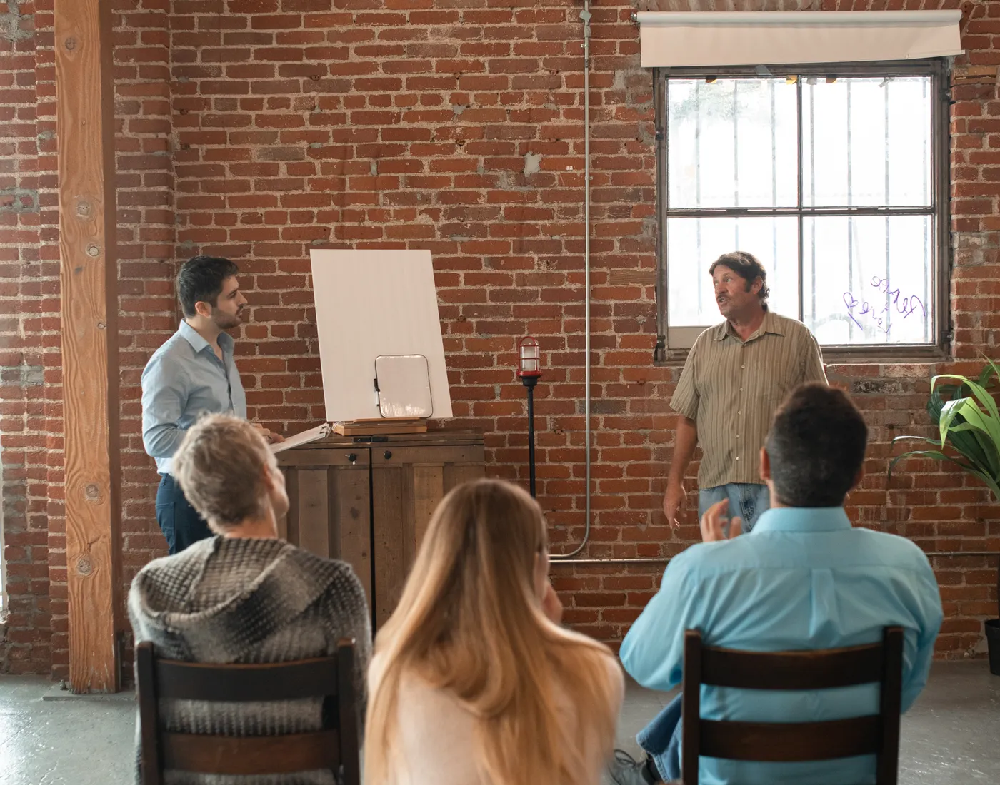

Coordinación general
Dirección académica y diseño de los programas
Define el recorrido de las cinco formaciones y coordina la supervisión de las prácticas.
Perfil demostrativo
Cursada online en vivo · Los encuentros quedan grabados
Psicología social aplicada
Cinco formaciones para quienes trabajan con personas todos los días: equipos de salud, docentes, acompañantes, operadores y referentes barriales. Marco teórico claro y práctica sobre situaciones reales.
Escuela de psicología social · desde el vínculo
Programa de formación
Cada trayecto parte de una situación concreta del campo y la trabaja con el análisis de los vínculos que la sostienen. Se cursan por separado o en secuencia.
5 formaciones
No encontramos formaciones con esa combinación.
Cómo se cursa
Dos horas, con exposición del equipo docente y trabajo grupal. Quedan grabados y disponibles durante toda la cursada.
Fichas de cátedra, bibliografía comentada y guías de intervención en PDF, con una selección corta y ordenada por clase.
Cada participante trae situaciones de su ámbito de trabajo; se analizan en grupo con el marco de cada módulo.
Emitido por Trama Vincular al completar la cursada y la entrega final. No reemplaza a un título de grado ni a una matrícula profesional.
El instituto
Trama Vincular es un espacio de formación y comunidad. Trabajamos con el supuesto de que ningún problema se explica solo por la persona que lo padece: hay una trama de vínculos, roles e instituciones que lo sostiene, y ahí es donde se interviene.
Las formaciones combinan el marco de la psicología social —análisis de las relaciones interpersonales, grupo operativo, prevención comunitaria— con el trabajo sobre situaciones concretas que traen los participantes.
Qué mira la psicología social: vínculo, rol, grupo e institución. Es el punto de partida común a las cinco formaciones y no requiere estudios previos.
Cada formación desarrolla un campo: instituciones, salud mental, cuidados, comunidad o familia. Se pueden cursar de a una, en el orden que cada persona necesite.
Análisis de casos reales en grupo reducido, con devolución del equipo docente sobre las intervenciones propuestas.
Una entrega breve sobre una situación del propio ámbito de trabajo. Con la cursada completa se emite el certificado de asistencia.

Quiénes enseñan
Cada formación está a cargo de un equipo con experiencia de campo en su eje. Los perfiles de abajo son demostrativos: los datos y las credenciales reales se cargan al publicar el sitio.
Dirección académica y diseño de los programas
Define el recorrido de las cinco formaciones y coordina la supervisión de las prácticas.
Perfil demostrativo
Conflictos institucionales · abordaje comunitario
A cargo de las formaciones sobre gestión de conflictos y consumos problemáticos.
Perfil demostrativo
Prevención · adultos mayores · vínculos familiares
A cargo de las formaciones sobre prevención del suicidio, adultos mayores y grupos familiares.
Perfil demostrativo
Antes de inscribirte
Si tu duda no está acá, escribinos y te respondemos por WhatsApp.
Escribir al institutoNo. Las formaciones están pensadas para quien trabaja con personas: docentes, enfermería, acompañantes terapéuticos, operadores socioterapéuticos, trabajo social, referentes de organizaciones. Cada programa aclara si pide experiencia previa en el campo.
Sí. Los encuentros en vivo se graban y quedan disponibles durante toda la cursada, junto con el material de cada módulo.
Un certificado de asistencia emitido por Trama Vincular al completar la cursada y el trabajo final. No es un título oficial ni habilita el ejercicio profesional.
Sí. La cursada es online en vivo y no hay sede presencial. Solo hacen falta una conexión estable y ganas de participar en los espacios grupales.
Se puede, aunque sugerimos no superponer dos trayectos con práctica supervisada en el mismo período. Si tenés dudas sobre el orden, lo conversamos antes de la inscripción.
5 formaciones · cursada online en vivo
Cómo empezar
Si no sabés cuál te sirve más, contanos con qué grupo trabajás y te ayudamos a elegir.